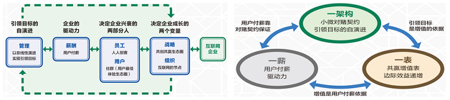

网络化战略阶段，海尔从传统制造家电产品的企业转型为面向全社会孵化创客的平台，致力于成为互联网企业，颠覆传统企业自成体系的封闭系统，而是变成网络互联中的节点，互联互通各种资源，打造共创共赢新平台，实现攸关各方的共赢增值。
为此，海尔在战略、组织、员工、用户、薪酬和管理六个方面进行了颠覆性探索，打造出一个动态循环体系，加速推进互联网转型。在战略上，建立以用户为中心的共创共赢生态圈，实现生态圈中各攸关方的共赢增值；在组织上，变传统的自我封闭到开放的互联网节点，颠覆科层制为网状组织。在这一过程中，员工从雇佣者、执行者转变为创业者、动态合伙人，目的是要构建社群最佳体验生态圈，满足用户的个性化需求。在薪酬机制上，将“企业付薪”变为“用户付薪”，驱动员工转型为真正的创业者，在为用户创造价值的同时实现自身价值；在管理创新上，通过对非线性管理的探索，最终实现引领目标的自演进。
2016年海尔的战略方向是以诚信为核心竞争力，以社群为基本单元，建立后电商时代的共创共赢新平台。海尔将重点聚焦把“一薪一表一架构”融入转型的六个要素中。“一薪”即用户付薪，是互联网转型的驱动力；“一表”为共赢增值表，目的是促进边际效应递增；“一架构”是小微对赌契约，它可以引领目标的自演进。三者相互关联，形成闭合链条，共同推进互联网转型。